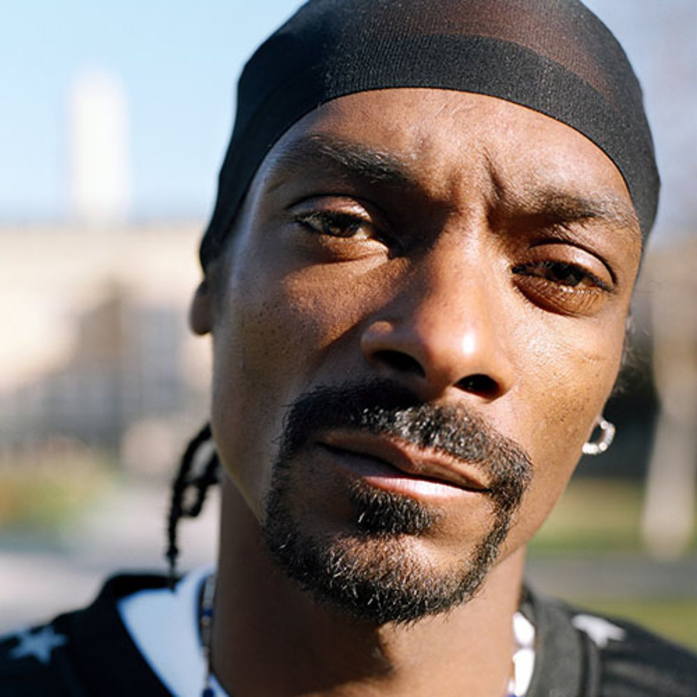

Snoop Dogg
Calvin Cordozar Broadus, Jr.
Conhecido pelos nomes artísticos Snoop Doggy Dogg, Snoop Dogg, Snoop Lion e Snoopzilla é um rapper, cantor, compositor, produtor musical e ator americano.
Discografia
- 1993: Doggystyle
- 1996: Tha Doggfather
- 1998: Da Game Is to Be Sold, Not to Be Told
- 1999: No Limit Top Dogg
- 2000: Tha Last Meal
- 2002: Paid tha Cost to Be da Boss
- 2004: R&G (Rhythm & Gangsta): The Masterpiece
- 2006: Tha Blue Carpet Treatment
- 2008: Ego Trippin'
- 2009: Malice n Wonderland
- 2011: Doggumentary
- 2013: Reincarnated
- 2015: Bush
- 2016: Coolaid
- 2017: Neva Left
- 2018: Bible of Love
- 2019: I Wanna Thank Me
Redes Socias